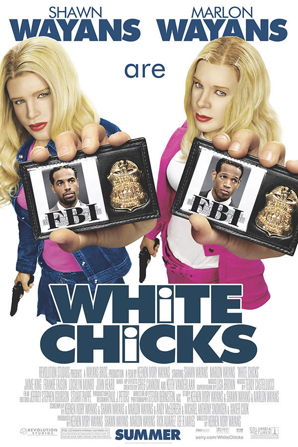

- Superbad - É Hoje Sinopse
- A Noite do Jogo Sinopse
- Todo Mundo em Pânico
- As Branquelas  Sinopse
- O Auto da Compadecida Sinopse
Os adolescentes Seth e Evan têm grandes esperanças para uma festa de formatura. Eles pretendem beber e conquistar as garotas para que eles possam se tornar parte da turma mais popular da escola, mas a ansiedade de separação e dois policiais entediados complicam missão dos amigos.
NetflixMax e Annie participam de um grupo de casais que organiza noites de jogos. Brooks, que é irmão de Max, chega e decide organizar uma festa com os temas de assassinato e mistério. No entanto, Brooks é sequestrado de verdade, mas o grupo acredita que tudo faz parte da misteriosa brincadeira. Agora, os seis amigos competitivos precisam resolver o caso para vencer o jogo, cujo rumo vai se tornando cada vez mais inesperado.
Prime video MAX Sinopse
Sinopse
Depois do assassinato de uma bela colega de classe, um grupo de adolescentes desorientados descobre que há um assassino entre eles. A heroína Cindy Campbell e a sua turma de amigos tentam se proteger do perigo, mas Gail Hailstorm, uma repórter irritante, simplesmente não os deixa em paz.
Mercado PlayDois irmãos agentes do FBI, Marcus e Kevin Copeland, acidentalmente evitam que bandidos sejam presos em uma apreensão de drogas. Como castigo, eles são forçados a escoltar um par de socialites nos Hamptons. Quando as meninas descobrem o plano da agência, elas se recusam a ir. Sem opções, Marcus e Kevin, dois homens negros, decidem fingir que são as irmãs e se transformam em um par de loiras.
NetflixAs aventuras de João Grilo e Chicó, dois nordestinos pobres que vivem de golpes para sobreviver. Eles estão sempre enganando o povo de um pequeno vilarejo, inclusive o temido cangaceiro Severino de Aracaju, que os persegue pela região.
Prime video Globoplay